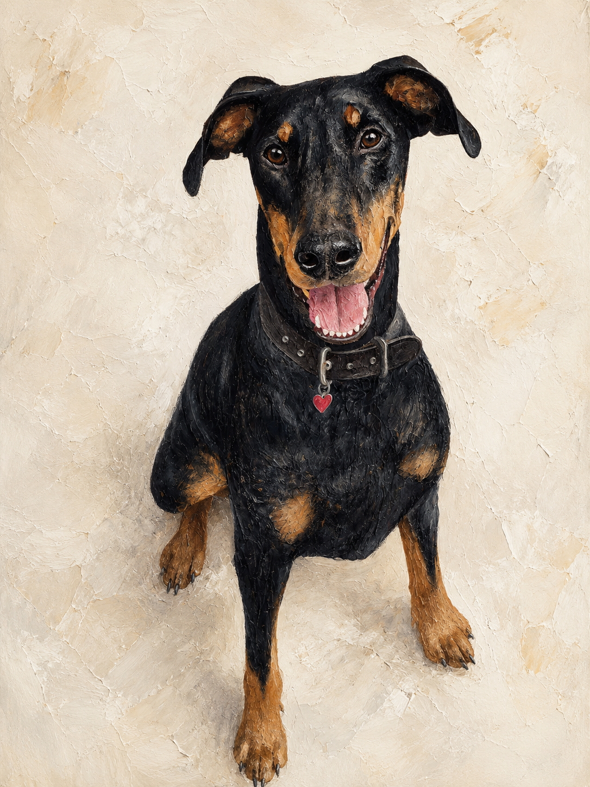
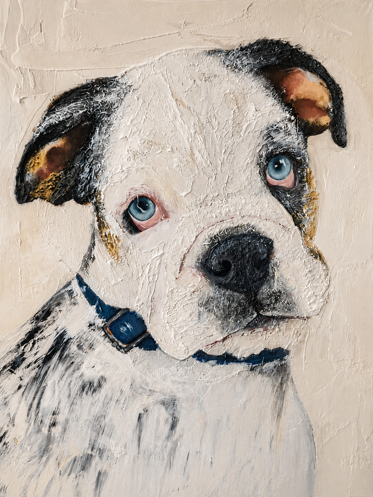
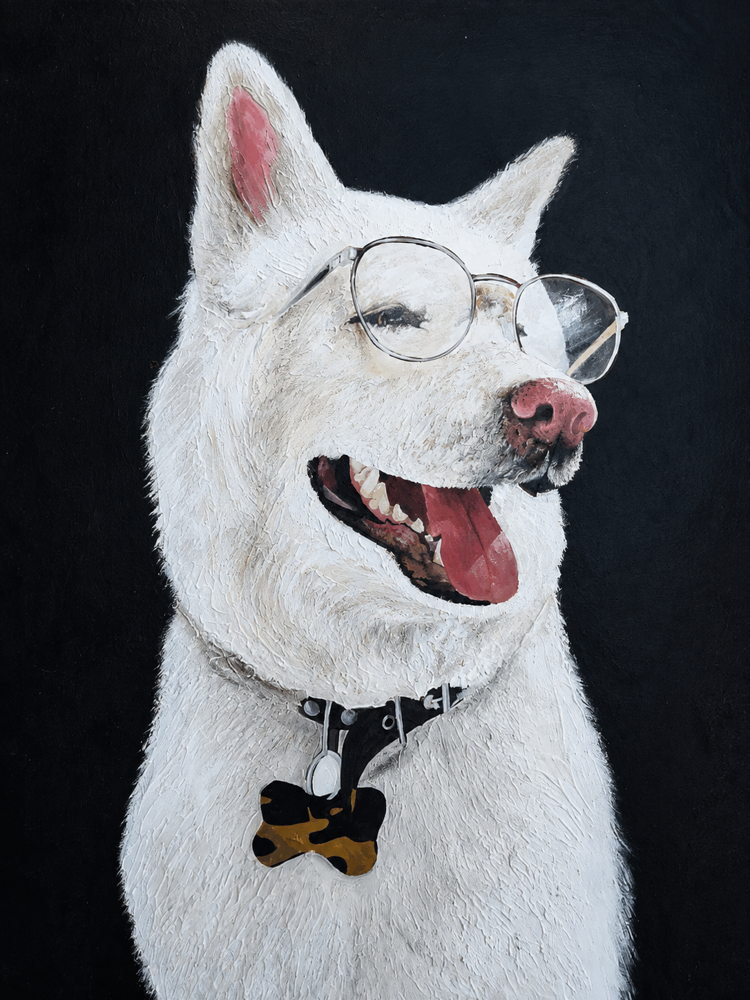
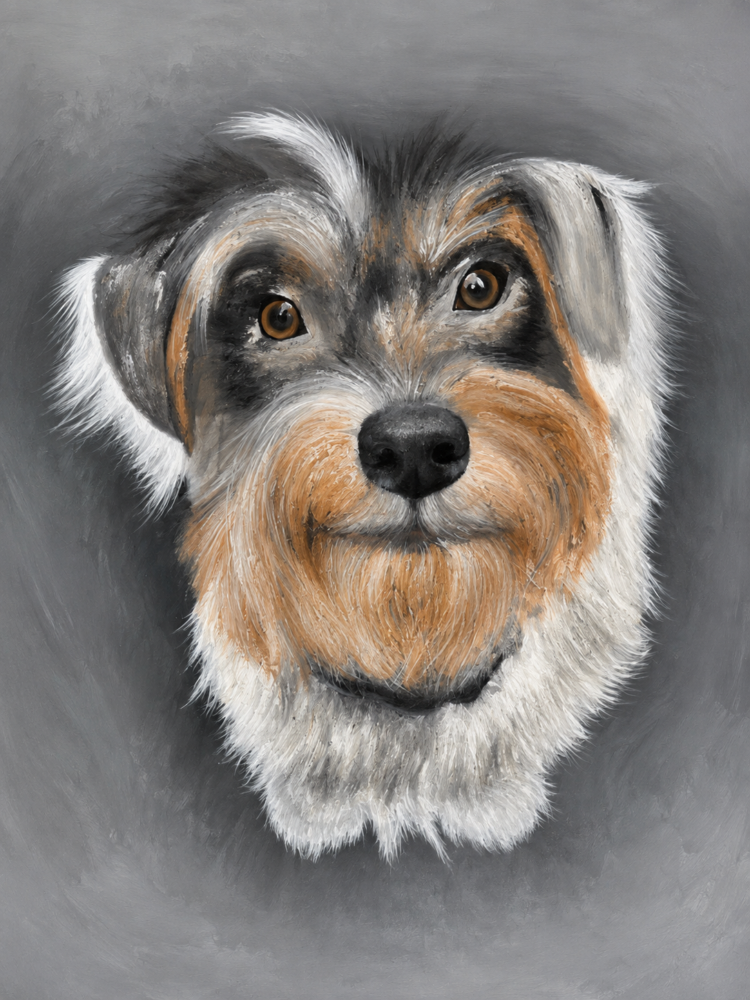
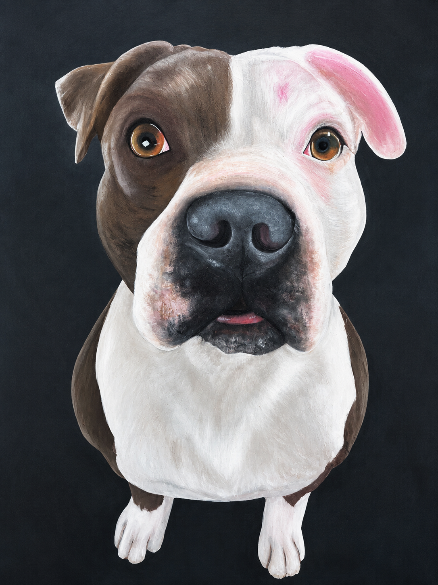
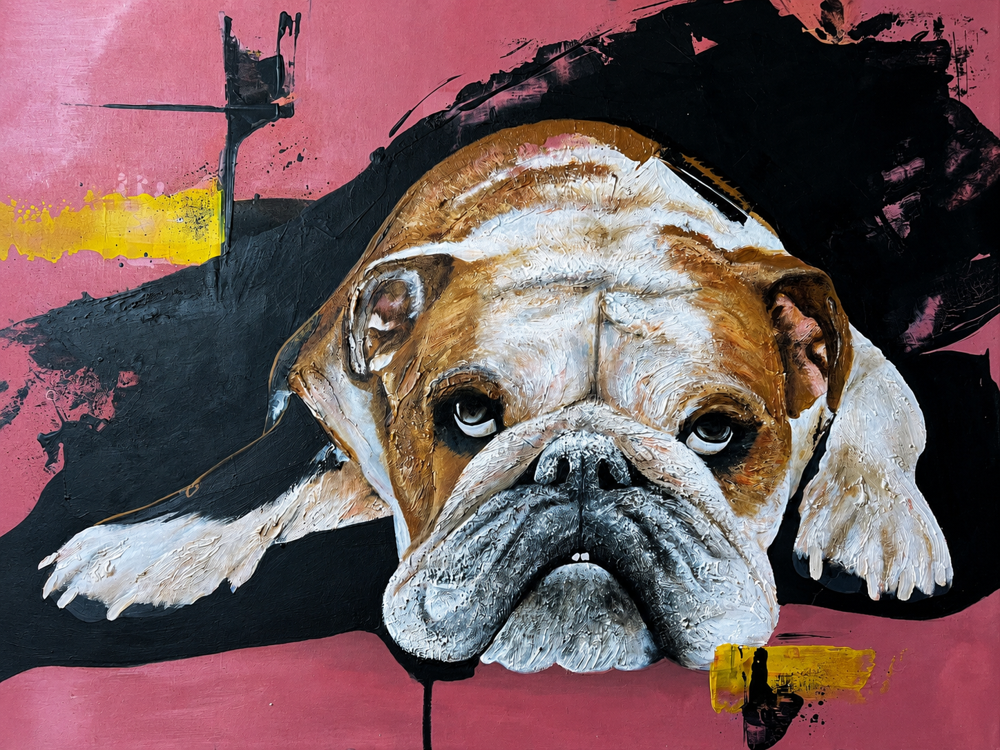
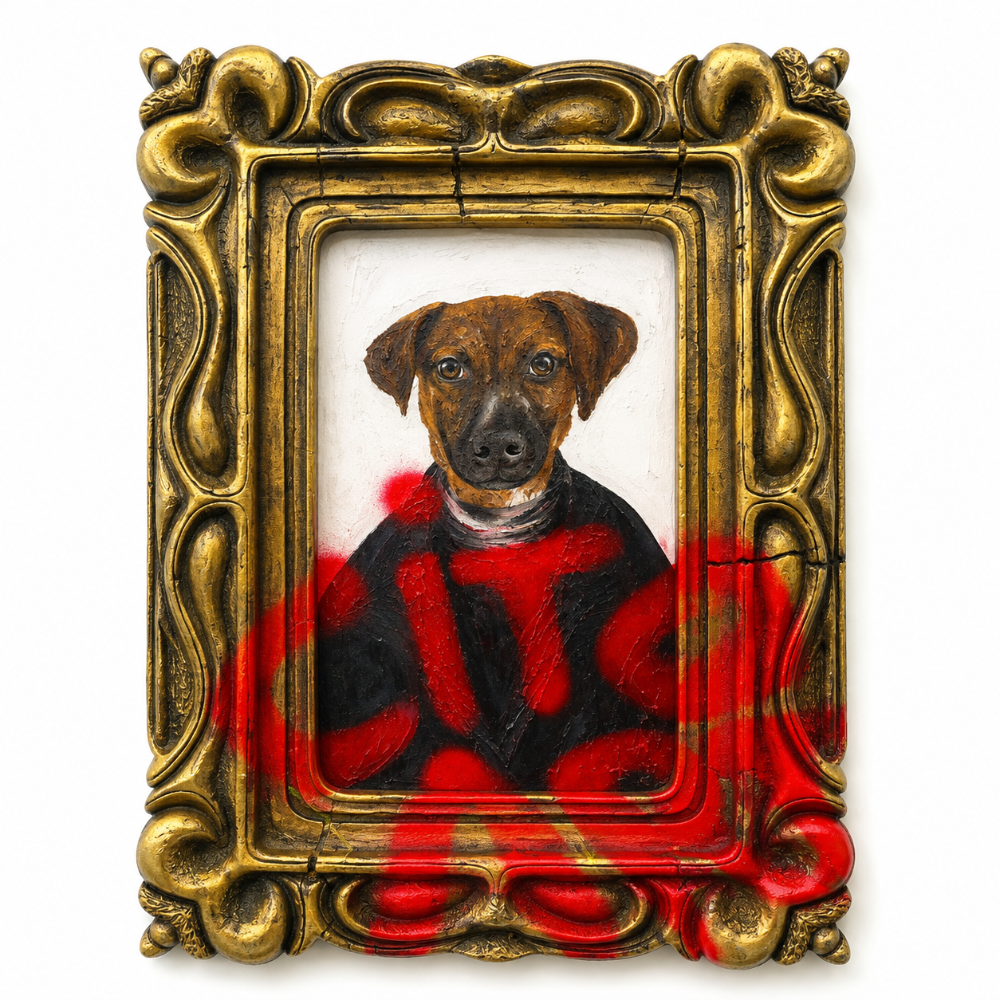
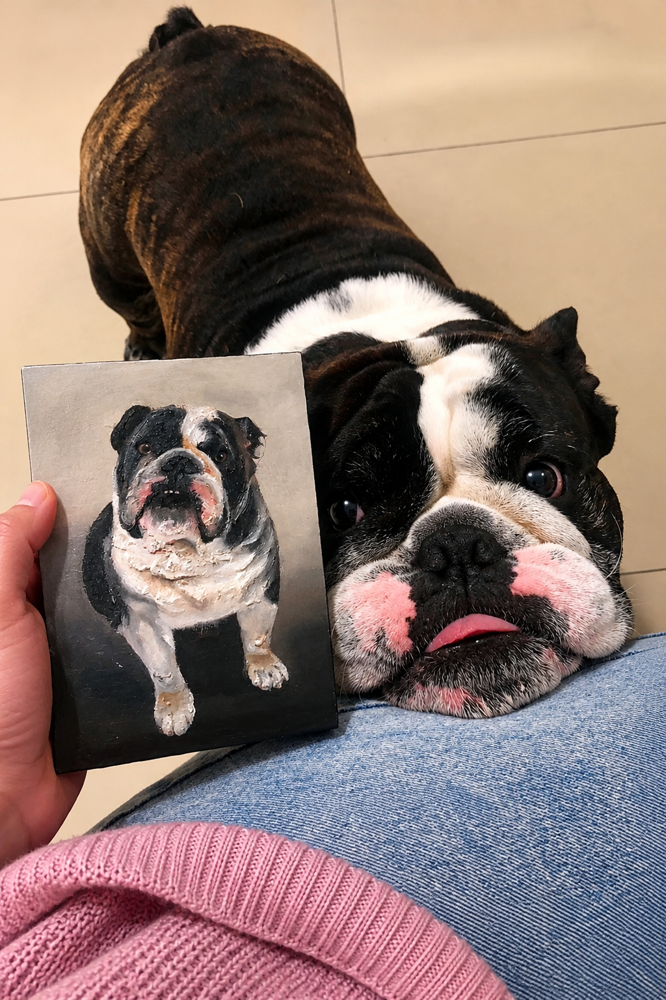

← Volver al inicio
Retratos que ya viven en casas reales
Estos son algunos de los retratos hiperrealistas pintados a mano.








Estos son algunos de los retratos hiperrealistas pintados a mano.







